块状地形
本页更详细地关注块状地形、类似 Minecraft 或由立方体制成的地形。
VoxelMesherBlocky 使用模型
此网格器将与模型 ID 对应的小网格组合成块。它剔除相互遮挡的面，但不进行贪婪的网格划分。这与Minecraft中使用的技术类似。
此网格器使用的体素数据可以存储在VoxelBuffer.CHANNEL_TYPE通道中。
创建体素模型
这种网格器具有 VoxelBlockyLibraryBase 类型的 library属性。这是一个资源，其中包含要用于构建体素网格的所有模型的列表：草、泥土、木材、树叶、水、灌木、楼梯、门部件等。
您可以就地创建新库，或者如果要在多个位置重复使用，则可以将库保存到文件中。您也可以从代码创建它。
可以使用两种类型的库：
VoxelBlockyLibrary ：模型的简单列表，其中列表中的索引对应于要在体素数据中使用的 ID。
VoxelBlockyTypeLibrary ：存储 列表 VoxelBlockyType 的更高级别的库。这是一个类似于 Minecraft 工作的实验性工作流程，稍后将对此进行解释。
更容易 VoxelBlockyLibrary 开始使用 。
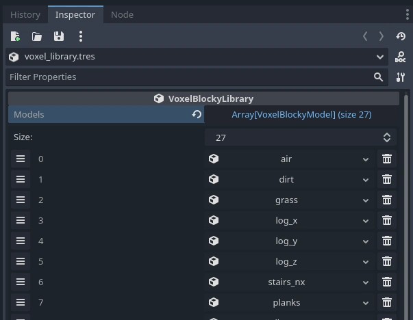
每个插槽可以包含一个 VoxelBlockyModel 资源。左侧显示的索引将是他们在体素数据中使用的 ID。体素是一种特例：按照惯例，它可以用作默认的“空气”体素 0 。您可以为每个插槽分配一个新 VoxelBlockyModel 资源，并填写其属性。
使用默认的 16 位体素数据，您最多可以创建 65,536 个模型。
警告
为了允许从旧版本的模块进行转换，可以实例化， VoxelBlockyModel 这意味着检查器和脚本可以创建它。但是，这实际上不是预期的。不应创建 的 VoxelBlockyModel 实例，而应使用其派生类。
立方体
有几种模型。最简单的是 VoxelBlockyModelCube ，它渲染一个在其侧面具有特定纹理的立方体。
使用 VoxelMesherBlocky ，建议使用纹理图集，以允许重复使用材质并减少绘制调用的次数。您可以创建一个包含体素可以使用的所有图块的纹理。例如，这是块状游戏演示中的一个：
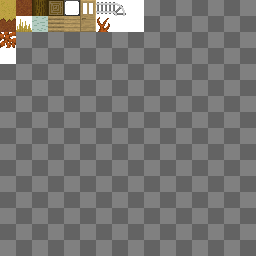
此图集是方形纹理，最多可以包含 16x16 个图块。此数字很重要，需要在 atlas_size_in_tiles 属性上 VoxelBlockyModelCube 设置，以便可以正确生成纹理坐标。
立方体模型的每个面上可以有不同的图块。您可以通过在 Cube tiles 类别下分配 的属性 Voxel 来决定使用哪一个。此处的坐标以图块为单位，而不是像素。
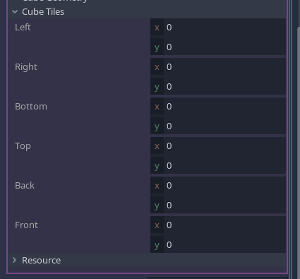
例如，如果要使用“木板”图块，则可以使用 x=3 和 y=1：
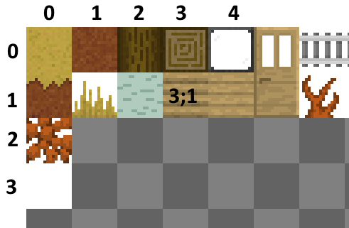
到目前为止，我们定义了一个立方体素，其面上有特定的纹理坐标，但我们仍然需要实际分配用于渲染它的纹理和材质。这可以在该 Material overrides 部分中完成，您可以在其中指定带有纹理的材质。
确保将其 albedo_texture 分配给您的纹理。您也可以检查该 Vertex Color/Use as albedo 属性，因为这将允许网格器在立方体边缘烘烤环境光遮蔽。
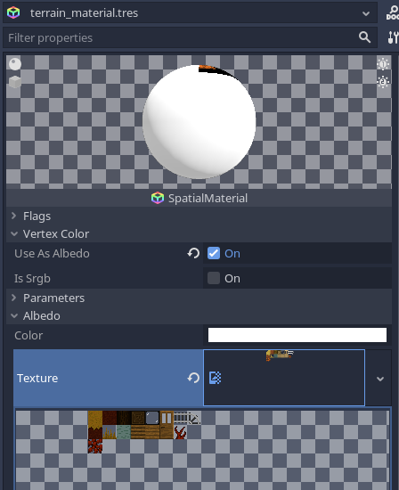
每个模型都可以使用具有不同纹理的不同材质，但请记住，重复使用材质越多越好。它减少了绘制调用的数量，并使渲染速度更快。
请注意，应用材质有几个级别，每个级别都覆盖另一个级别：
网格
使用 Cube 几何体创建体素类型是可用于简单体素的快捷方式，但最通用的工作流程是使用实际网格。如果使用 VoxelBlockyModelMesh ，则可以改为分配网格资源。这些 Cube tiles 属性不可用，因为您必须在 3D 建模器（如 Blender）中分配网格的纹理坐标。
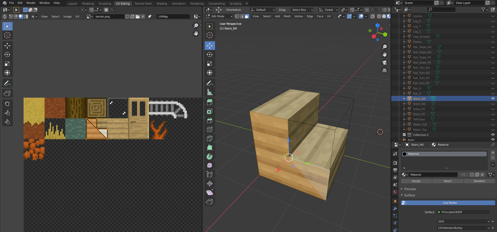
网格可以具有您想要的任何形状，但是需要遵守一些约束：
网格的原点应该是它的下角。
Blender的坐标系是Z-up，但Godot是Y-up。确保您导出的网格在导入 Godot 后不会进入负坐标。
顶点最好位于 0~1 范围内，在所有方向上
保持low-poly。网格器可以处理大型模型，但如果复杂模型出现很多次，性能会迅速下降。
位于 1x1x1 单元立方体侧面的面将是唯一可以被网格划分器剔除的面。确保它们完美排列。如果不这样做，则由于生成的几何体数量未被剔除，可能会导致速度急剧下降。
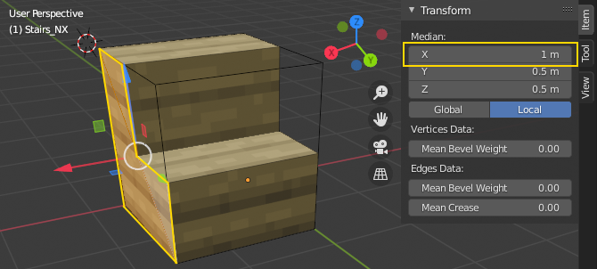
用于导出网格的最佳格式是 OBJ。 Godot 默认将此格式作为网格资源导入。其他格式不适合，因为Godot将它们作为场景导入，而 VoxelBlockyModelMesh 资源需要网格，而不是场景。您也可以选择从此处导出材质，但建议在Godot中进行，因为它允许您重复使用它们。
注意
每个模型中都可以使用第二种材质。如果给定网格同时需要透明和不透明部件，这将非常有用。这像往常一样工作，通过具有两个表面的网格。但是，无论如何，面剔除仍将使用模型的属性。例如，如果模型具有不透明的边，并且在中间是透明的，则可以将其定义为非透明块，因此当放置在其他不透明块旁边时，其边的几何形状将被剔除。有关详细信息，请参阅（透明度）\[#transparency\]部分。
体素模型 ID 的使用
在 VoxelBlockyLibrary 中定义的体素 ID 就像瓦片地图中的图块：对于简单的游戏，它们可以直接对应于一种块类型。但是，随着时间的推移，您可能希望避免以这种方式直接对待它们。相反，您可以定义自己的块类型列表，每种类型可以对应于一个或多个 VoxelBlockyModel ID。
来自 Minecraft 的示例：
楼梯可以放置在不同的方向，有时具有不同的外观。这些实际上是多个体素 ID。
作物可以有几个生长阶段。对于相同类型的块，每个阶段都是不同的体素 ID。
一扇门实际上由 2 个体素组成。它的顶部和底部。如果我们考虑打开和关闭的门，可能会有更多。
一条轨道可以对应于许多不同的体素：直线轨道、坡度和转弯。它们都是导轨，但子配置不同。
管理“游戏块”ID 和体素 ID 之间的对应关系由您决定。
旋转模型
目前，不支持自动旋转或翻转体素，因此您必须为某种类型的体素创建可能需要的每个旋转版本。但是，可以使用检查器中的旋转按钮在编辑器中创建这些模型变体：
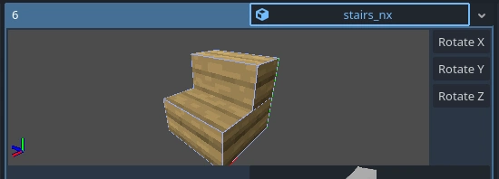
这些按钮不是用于预览的，它们实际上是旋转模型的，当放置在游戏中时，它将出现在该旋转中。
透明度
您可能希望某些体素类型是透明的。实际上有两种主要方法可以实现此目的：
使用 Alpha 剪辑：丢弃透明像素，允许通过不透明通道进行渲染，从而避免透明表面的一些典型问题。
Alpha 混合：实际透明度，当多个透明表面彼此呈现时有一些限制
两者都需要使用与您可能使用的默认材料不同的材质。请注意，如果您使用纹理图集，则典型设置只需要使用相同图集的 3 种材质：不透明、Alpha 剪辑和透明。
VoxelBlockyModel 资源也具有 transparency_index 属性。此属性允许调整两个体素如何遮挡其面部。例如，假设您有两个透明的体素，玻璃和树叶。默认情况下，如果您将它们并排放置，它们共享的面将被剔除，从而允许您从玻璃块上看到叶子：
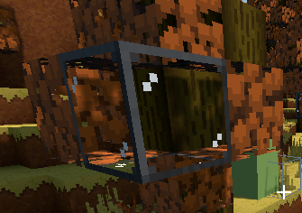
如果两个面相互接触，如果它们具有相同的透明度指数，它们可能会被剔除。但如果它们的透明度指数不同，他们可能不会。这允许直接看到玻璃后面的叶子，而不是看到内部。
在这里，玻璃 的transparency_index=2，叶子的 transparency_index=1 ：
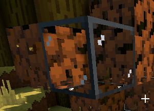
VoxelBlockyModel 还有一个 culls_neighbors 属性。此功能默认处于启用状态，可防止不必要地渲染相邻体素侧。但是，对于某些透明体素，可能更可取的是始终渲染相邻的体素侧。例如，如果所有内部体素侧都可见，则可以使植物看起来更密集。
这是一组叶子（ culls_neighbors=true 默认值）：
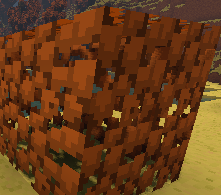
这是同一组叶子与 culls_neighbors=false .体素之间的两侧被渲染，使这组叶子看起来不那么空心。
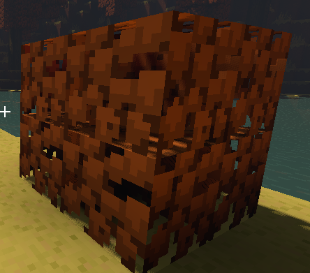
随机报价
VoxelBlockyModel 具有名为 random_tickable 的属性。这是用于非常具体的功能 VoxelToolTerrain ： run\_blocky\_random\_tick
使用VoxelMesherBlocky 类型
警告
此功能是实验性的，可能存在错误、缺少部件，并且可能会随着时间的推移而更改。它提出了一种组织游戏模型的方法，并自动化了一些事情，但如果你想以自己的方式处理它，你仍然可以使用 VoxelBlockyLibrary 。另请参阅Github上的相应问题。
存在替代库类型 VoxelBlockyTypeLibrary 。它不是直接包含模型列表，而是包含 . VoxelBlockyType 类型更接近游戏中所谓的“块类型”，并且该系统的设计与Minecraft中的块定义方式非常相似（灵感来自 https://docs.minecraftforge.net/en/1.19.2/blocks/states/）。
属性
一个类型可以有几个 VoxelBlockyAttribute .每个属性都类似于一个表示类型状态的变量。它们可能是原木的方向，按下或不按下的按钮，门的顶部或底部的块，与邻居的连接或作物的生长水平。
类型通常应该具有很少的属性，并且每个属性也可以只接受几个值（介于 0 和 255 之间）。此限制与体素的轻量级性质有关，您不能将太多内容存储到单个体素中，否则它会失去成为具有数百万体素的地形一部分的能力。如果您需要一个块具有更复杂的状态，例如对象和事物列表，则此系统可能不适用于您的情况，您将不得不回退使用体素元数据和实际节点（如 Minecraft 中的实体）。
变体模型
将属性分配给类型后，检查器将显示每个状态组合的模型列表：
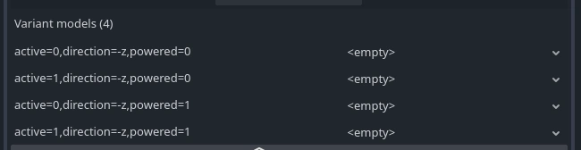
您还可以使用检查器顶部文字 3D 预览旁边的侧面板预览组合。
如果有许多属性或许多状态，则此列表可能会变得非常大。在《我的世界》中，红石尘在技术上有 1,296 种型号变体。因此，它不是使用变体列表，而是使用模型的条件组合。将来可能会实现类似的功能。
旋转
属性的一个非常常见的用途是旋转。如果您使用内置的旋转属性，则自动生成旋转模型的情况 VoxelBlockyType 非常普遍：
每个旋转属性都带有默认旋转，您可以像设计具有该旋转一样设计模型，以便可以正确生成每隔一个旋转。
由于这些变体是自动生成的，因此它们不会显示在检查器中，但它们会像其他变体一样在内部存储。
注意
它可能很诱人地用于 VoxelBlockyAttributeRotation 所有内容，但它的变体数量最多。引擎必须为每个组合生成预旋转模型，因此内存成本很高。同样，如果不需要某些旋转，请考虑更改这些属性的属性（可以排除垂直旋转）。
型号名称和数字 ID
类型和属性的名称很重要。它们用于以以下形式唯一标识模型：
<type_name>[attribute1=value,attribute2=value,...]
例如，可以将特定体素标识为 button[direction=up,pressed=yes] 。如果重命名、删除或添加导致此标识符更改的属性，它将有效地成为不同的体素，并可能被赋予不同的 ID。这意味着，如果您有一个使用旧名称保存的世界，则在更改类型后这些名称将不会显示。
类型可以对应于一个或多个具有不同数字 ID 的模型。与 相反 VoxelBlockyLibrary ，您不会选择这些 ID。它们是根据您提供给每种类型的所有属性的所有组合自动生成的。类型具有的属性和状态越多，为其保留的模型 ID 就越多。
烘焙特定模型后，其名称和属性状态将与特定的数字 ID 相关联。
数字 ID 不是手动分配的一个原因，首先是因为当你有很多类型时，不出错是很乏味的，但也因为修改。在 Minecraft 中，与其他世界相比，每个世界的每个体素可能具有不同的数字 ID，因为资源包和模组可能会添加不同的模型。添加或删除模组不应使 ID 相互冲突。最后，唯一标识模型的不是数字 ID。而是使用类型和属性名称。类型名称甚至可以使用类似 minecraft:flower 和 的 mymod:thingy 语法进行命名空间。
数字 ID 仅在特定世界中是唯一的。它们用于存储体素数据并通过网络发送，这更有效，但不能跨不同世界移植。
数字 ID 和名称与我们可以称之为“ID 映射”的内容映射。您可以通过单击 Inspect model IDs 检查器 VoxelBlockyTypeLibrary 中最底部的 来查看生成的 ID 列表。
脚本中的用法
处理体素数据时，您仍然需要使用 获取 VoxelTool 和设置模型 ID，因为这是体素实际存储的内容。如果给定类型的体素需要更改状态，这意味着它将值更改为另一个模型 ID，就像您在基于经典 VoxelBlockyLibrary 的游戏中所做的那样。
VoxelBlockyTypeLibrary 具有从类型名称及其每个属性的值获取模型 ID 的函数，反之亦然。如果大量需要特定 ID，请考虑将它们缓存在局部变量中以提高性能。
使用 StringName 类型名称和属性名称代替 String ，这与其他名称进行比较的效率更高一些。因此，您需要使用以下特定 & 语法：
var model_id := library.get_model_index_with_attributes(&"button",
# 请注意，字典键不使用“&”，因为Godot将StringName键转换为String。
{
"direction": VoxelBlockyAttributeDirection.DIR_POSITIVE_X,
"active": 1,
"powered": 0
})
如果类型只有一个属性，则可以使用更快的快捷方式：
var model_id := library.get_model_index_single_attribute(&"log", VoxelBlockyAttributeAxis.AXIS_Z)
如果类型没有属性，或者您只需要其默认状态：
var model_id := library.get_model_index_default(&"leaves")
VoxelMesherCubes
该网格器专门生成具有特殊颜色的立方体。
快速碰撞替代方案
移动和滑动
基于网格的碰撞在Godot中非常准确且功能丰富，但是它有一些缺点：
每次修改地形时都必须构建Trimesh碰撞形状，这非常慢。
物理引擎必须处理玩家附近的任意三角形，这不能利用特定情况，例如一切都是立方体。
有时您可能还想要一个更简单、更面向游戏的碰撞系统
该 VoxelBoxMover 类提供了一个类似 Minecraft 的碰撞系统，该系统的使用方式与 move_and_slide() .它更有限，但速度极快，不受隧道的影响。
下面的代码显示了如何使用它，但有关完整代码，请参阅块状演示。
var box_mover = VoxelBoxMover.new()
var character_box = AABB(Vector3(-0.4, -0.9, -0.4), Vector3(0.8, 1.8, 0.8))
var terrain = get_node("VoxelTerrain")
func _physics_process(delta):
# …此处显示设置速度的输入命令。。。
# 应用地形碰撞
var motion : Vector3 = velocity * delta
motion = box_mover.get_motion(get_translation(), motion, character_box, terrain)
global_translate(motion)
velocity = motion / delta
这种技术主要适用于使用 VoxelMesherBlocky ，因为它从使用它的 VoxelBlockyLibrary 块中获取有关哪个块可碰撞的信息。不过，它可能在其他网格器中有一些有限的支持。
如果使用 VoxelMesherBlocky ，它将使用资源中 VoxelBlockyModel 指定的 AABB 列表。如果列表为空，则体素不会发生冲突。还可以通过分配 collision mask 的属性 VoxelBoxMover 来过滤掉某些冲突。这将与资源上 VoxelBlockyModel 找到 collision mask 的属性匹配。
光线投射
还存在另一种光线投射函数，该函数返回特定于体素的结果。如果您也关闭了经典碰撞，这可能会很有用。这可以通过 VoxelTool 类访问。可以使用 获得 get_voxel_tool() 绑定到地形的实例。
var terrain : VoxelTerrain = get_node("VoxelTerrain")
var vt : VoxelTool = terrain.get_voxel_tool()
var hit = vt.raycast(origin, direction, 10)
if hit != null:
# 返回的位置在体素坐标中，可用于使用“VoxelTool”的其他功能访问体素的值`
print("Hit voxel ", hit.position)
如果使用 VoxelMesherBlocky ，则可以通过指定 collision mask 参数来过滤掉某些体素类型。这将与资源上 VoxelBlockyModel 找到 collision mask 的属性匹配。